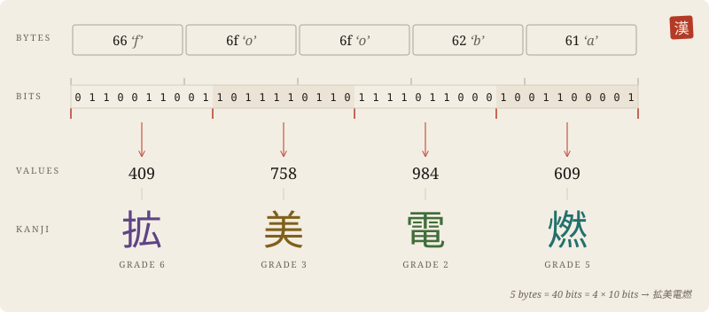

Workbench
No file chosen.
…or drop one here. Nothing leaves this page.
Output
Use the arrow keys to inspect each kanji.
Compare with other notations
Alphabet
All 1026 kanji of the 2020 school allocation table. 1024 of them carry ten bits each, numbered in code point order; 終 closes a short final block and 印 introduces the seal.
- 一
Cut the bytes into blocks of five
Five bytes are forty bits. Forty bits make four numbers from 0 to 1023.
- 二
Write each number as a kanji
The 1024 kanji are ordered by code point: 0 is 一, 1 is 丁, … 1023 is 鼻. Every one is taught by the end of primary school.
- 三
Close the end, and seal if you like
A short last block needs one to four kanji. Only a four-byte remainder is ambiguous, so it ends with 終. An optional 印 and two more kanji form a checksum.

When it helps
- Reading a fingerprint or key aloud, or copying it by hand: 32 bytes become 26 familiar kanji.
- Passing data through places that accept Japanese text but mangle symbols.
- Short codes that look at home in Japanese print.
When it does not
- Saving bytes: each kanji costs three bytes in UTF-8, so the result is larger than base64.
- Keeping secrets: this is a notation, not encryption. Anyone can read it back.
- Web addresses: kanji in a URL are escaped to nine ASCII characters each.